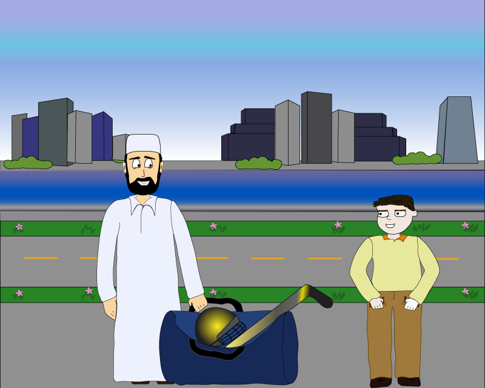

My prejudice

Every situation has two sides: Subway riders think that this nervous man is a terrorist because he wears traditional attire and has a big bag, but they cannot see that this man is actually carrying a hockey uniform to bring to his son who plays hockey.
Xenophobia in Russia
According to research conducted by Mark Ustinov of Moscow’s Higher School of Economics, nearly 70 percent of Russians exhibit negative feelings toward people of other ethnicities, and one in five believes that they have no place in Russia at all (a source ).At the same time, Russia produces only a small number of items such as technology, clothes, cars, and food and uses foreign items from China, Egypt, USA, and Germany.
“We may have different religions, different languages, different colored skin, but we all belong to one human race.
We all share the same basic values.” Kofi Annan